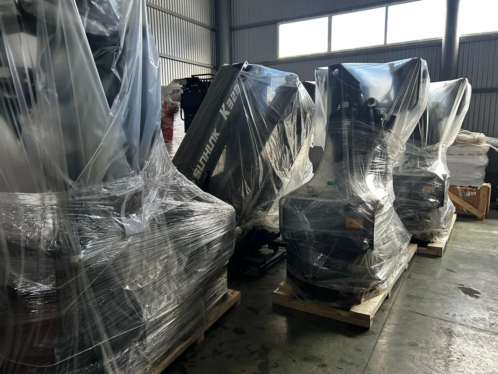
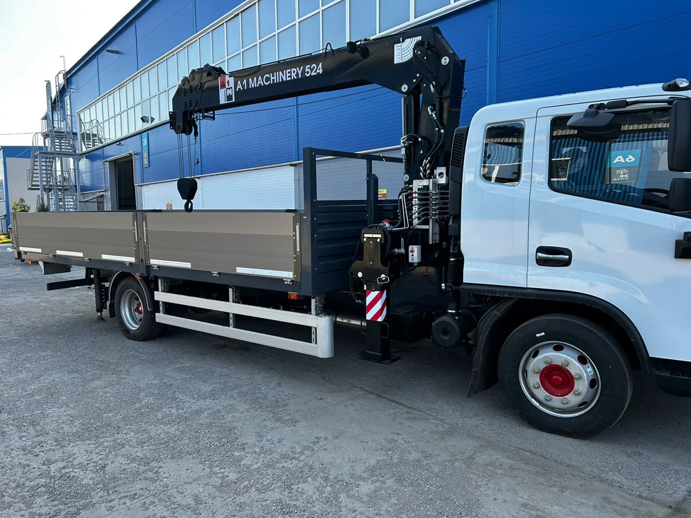

What is a flatbed truck with a loader crane?
A crane-equipped flatbed can load materials onto its own bed, transport them to site and unload them within the working reach of its boom.

One truck for lifting and delivery
The chassis carries both the cargo bed and the loader crane. A typical job is delivering building materials to a customer who has no forklift on site. Two figures matter for that trip. The crane chart tells you what the boom can lift at the required radius. The truck’s payload tells you how much can travel on the bed.

How the boom handles the load
On a telescopic boom with a winch, the hook hangs from a wire rope. This lets it travel vertically, for example when lowering material below ground level. A knuckle boom has articulated sections that can change angle relative to one another. Depending on its specification, it can take a grab, auger or another manufacturer-approved attachment.

Buying a complete truck or fitting an existing chassis
A buyer can order a complete vehicle or have a loader crane matched to a truck already in the fleet. For an existing vehicle, provide the chassis model, bed dimensions and details of a typical load. Pallet weight and size matter for routine deliveries. For long materials, usable bed length is especially important.